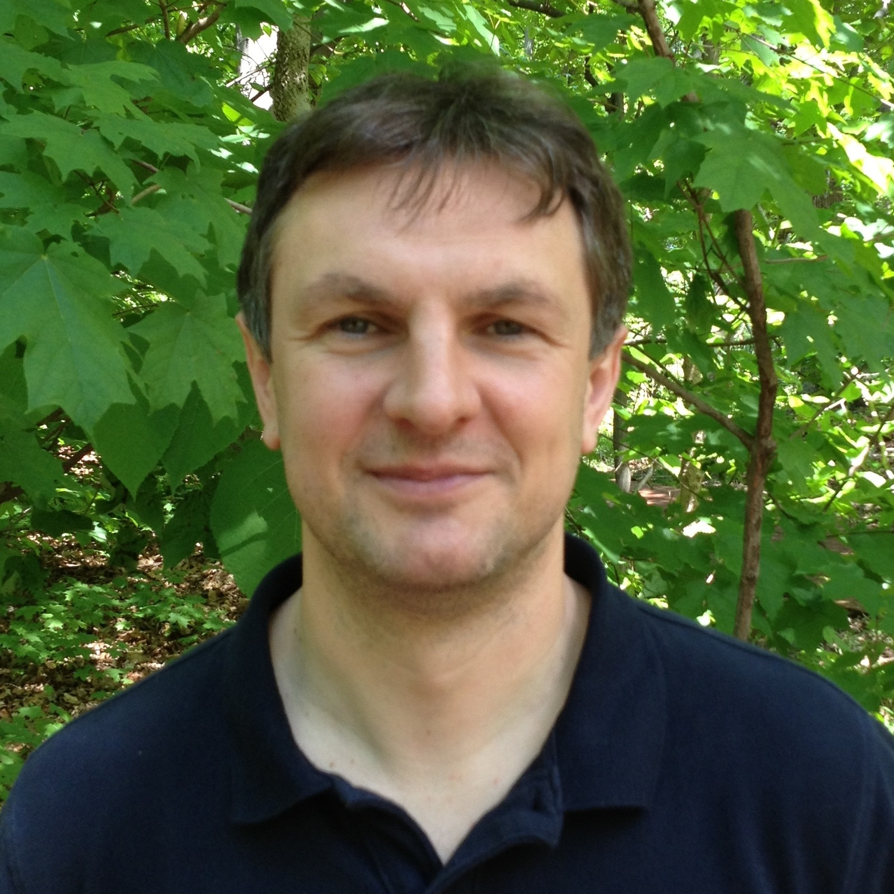
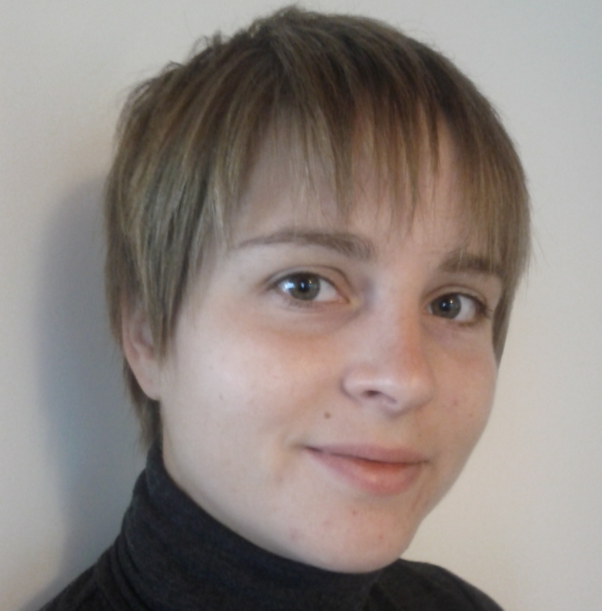

|
Center for Algorithms and Machine Learning (CAML) is housed at the School of Informatics and Computing at Indiana University, Bloomington. In the recent years machine learning has flourished with the availability of data and computational resources leading to unprecedented successes in prediction and control. Our mission is to bring together researchers across different departments at the school in order to foster excellence in algorithm development for machine learning. Our center is at the forefront of theoretical foundations of algorithm development as well as large scale applications to computer vision and health. The core set of members of CAML also includes faculty from the Department of Statistics which plays a crucial role in applications of machine learning to data analysis. |
Events and Seminars
Current Seminars and Talk Series
- Intelligent and Interactive Systems Talk Series – weekly meetings on Mondays, 2:30pm at Informatics, East, 130. Organizer: David Crandall.
- Seminar in Theoretical Computer Science – biweekly meetings on Fridays, 12pm at Lindley Hall, 101. Organizer: Qin Zhang.
- Statistics Colloquium – weekly meetings on Mondays, 4pm at various locations. Organizer: Michael Trosset.
- Theoretical Computer Science+ Online Talk Series – biweekly meetings on Wednesdays, 1pm at Lindley Hall, 325. Organizer: Grigory Yaroslavtsev.
Upcoming Events
- 67th Midwest Theory Day at Indiana University, Bloomington. April 15-16, 2017.
Core Members
Department of Computer Science and Informatics
-
David Crandall
David Crandall is an Associate Professor in the School of Informatics and Computing at Indiana University, Bloomington, where he is a member of the programs in Computer Science, Informatics, Cognitive Science, and Data Science. He received the Ph.D. in computer science from Cornell University in 2008 and the M.S. and B.S. degrees in computer science and engineering from the Pennsylvania State University in 2001. He was a Postdoctoral Research Associate at Cornell from 2008-2010, and a Senior Research Scientist with Eastman Kodak Company from 2001-2003. His research in computer vision and applied machine learning has been funded by the National Science Foundation (including a CAREER award in 2013), IARPA, U.S. Navy, the Air Force Office of Scientific Research, Google, the Lilly Endowment, and Eastman Kodak Company.
-

Tor Lattimore
Tor Lattimore is an assistant professor at the School of Informatics and Computing at Indiana University, Bloomington. He received a BSc in mathematics in 2009 and a PhD in computer science in 2013, both at the Australian National University. From 2014-2016 he was a postdoctoral fellow at the University of Alberta in Canada. His research lies on the intersection of statistics and machine learning, with a special focus on sequential decision making in the face of uncertainty.
-

Sriraam Natarajan
Sriraam Natarajan is an Associate Professor of Informatics and Computer Science at Indiana University. He was previously an Assistant Professor at Indiana University, Wake Forest School of Medicine, a post-doctoral research associate at University of Wisconsin-Madison and had graduated with his PhD from Oregon State University. His research interests lie in the field of Artificial Intelligence, with emphasis on Machine Learning, Statistical Relational Learning and AI, Reinforcement Learning, Graphical Models and Biomedical Applications. He has received the Young Investigator award from US Army Research Office.
- 
Predrag Radivojac
Predrag Radivojac is a Professor of Computer Science at Indiana University, Bloomington. Prof. Radivojac received the B.S. degree from the University of Novi Sad in 1994 and M.S. degree in 1997 from the University of Belgrade, both in Electrical Engineering. In 2003 he received the Ph.D. degree in Computer and Information Sciences from Temple University. In 2004 he held a post-doctoral position at Indiana University School of Medicine, after which he joined Indiana University, Bloomington as a faculty member. Prof. Radivojac's research interests span the areas of computational biology and machine learning. He is interested in semi-supervised learning, kernel-based learning, and structured-output learning with applications to open-world domains such as protein function prediction, genome interpretation, and mass-spectrometry proteomics. Prof. Radivojac received the National Science Foundation CAREER Award in 2007 and was an August-Wilhelm Scheer Visiting Professor at the Technical University of Munich in 2016.
-
Michael S. Ryoo
Michael S. Ryoo is an Assistant Professor of the School of Informatics and Computing at Indiana University. His research interest is within the areas of Computer Vision and Robotics, with a particular emphasis on human activity recognition/learning, first-person computer vision, and human-robot interaction. Before joining IU, Dr. Ryoo was a staff researcher within the Robotics Section of the NASA's Jet Propulsion Laboratory (JPL) from 2011 to 2015. Dr. Ryoo received the Ph.D. degree from the University of Texas at Austin in 2008, and the B.S. degree from the Korea Advanced Institute of Science and Technology (KAIST) in 2004. He has been organizing a number of tutorials and workshops at major Computer Vision conferences including CVPR 2011/2014/2016, and is the winner of the best vision paper award at ICRA 2016.
-
Chung-chieh Shan
Chung-chieh Shan is an assistant professor at the School of Informatics and Computing at Indiana University, Bloomington. He studies what things mean that matter. He works to tap into and enhance the amazing human ability to create concepts, combine concepts, and share concepts, by lining up formal representations and what they represent. To this end, in the short term, he develops programming languages that divide what to do and how to do it into modules that can be built and reused separately. In particular, he develops so-called probabilistic programming languages, which divide stochastic models and inference algorithms into modules that can be built and reused separately. In the long term, he hopes to supplant first-order logic by something that does not presuppose a fact of the matter what things there are, though there may be a fact of the matter what stuff there is.
- 
Martha White
Martha White is an assistant professor of Computer Science at Indiana University, Bloomington. Her primary research goal is to develop learning algorithms for autonomous agents learning on streams of data. To achieve this goal, her research focus is on developing practical algorithms for reinforcement learning and representation learning, including parameter-free, sample-efficient learning methods for policy evaluation and control in reinforcement learning and principled optimization approaches for sparse coding, kernel representations and neural networks.
-

Grigory Yaroslavtsev
Grigory Yaroslavtsev is an assistant professor of Computer Science at Indiana University. Prior to that he was a postdoctoral fellow at the Warren Center for Network and Data Sciences at the University of Pennsylvania. He was previously a Postdoctoral Fellow in Mathematics at Brown University, ICERM. He received his Ph.D. in Theoretical Computer Science in 2014 from Pennsylvania State University and an M.Sc. in Applied Mathematics and Physics from the Academic University of the Russian Academy of Sciences in 2010. Grigory works on efficient algorithms for sparsification, summarization and testing properties of large data, including approximation, parallel and online algorithms, learning theory and property testing, communication and information complexity and private data release.
-
Qin Zhang
Qin Zhang is an assistant professor at the Indiana University, Bloomington. He received a B.S. degree from Fudan University and a Ph.D. from Hong Kong University of Science and Technology. He also spent a couple of years as a post-doc at the Theory Group of IBM Almaden Research Center, and the Center for Massive Data Algorithmics at Aarhus University. He is interested in algorithms for big data, in particular, data stream algorithms, sublinear algorithms, algorithms on distributed data; I/O-efficient algorithms, data structures, database algorithms and communication complexity.
-

Yuan Zhou
Yuan Zhou is an assistant professor of Computer Science at Indiana University. Prior to that he was an instructor in applied mathematics at MIT. Yuan received his Ph.D. from Carnegie Mellon University in 2014. His research interests span theoretical computer science and operations research with emphasis on linear programming and semidefinite programming relaxations, discrete optimization, approximation algorithms and hardness of approximation, harmonic analysis of discrete functions, process flexibility and decision under uncertainty with applications to crowdsourcing.
Department of Statistics
-
Daniel McDonald
Daniel McDonald is an Assistant Professor of Statistics and Adjunct Assistant Professor of Computer Science at Indiana University, Bloomington. He was an undergraduate at IU, receiving a B.S.O.F. in cello performance from the IU Jacobs School of Music and a B.A. in economics and mathematics. After college, he worked at the Federal Reserve Bank of St. Louis before enrolling at Carnegie Mellon to pursue a doctorate in statistics. Daniel's main research interests involve the estimation and quantification of prediction risk. He is especially interested in developing methods for evaluating the predictions made using complex dependent data. This includes the application of statistical learning techniques to time-series prediction problems in the context of economic forecasting, as well as investigations of cross-validation and the bootstrap for risk estimation, and examining the trade-offs between prediction risk and computational costs.
-
Michael Trosset
Michael W. Trosset is Professor and Chair of IU’s Department of Statistics. As an undergraduate, he studied mathematics at Rice University; as a graduate student, he studied statistics at the University of California at Berkeley. Before joining IU in 2006, he taught at the University of Arizona and the College of William & Mary. His primary research interests lie in the general areas of high-dimensional multivariate data analysis and computational statistics. Much of his work is concerned with techniques for constructing low-dimensional Euclidean representations of data, as in multidimensional scaling, graph embedding, and manifold learning.
-
Andrew Womack
Andrew Womack is an assistant professor in the Department of Statistics and Indiana University. Before joining IU, he was a postdoctoral researcher at the University of Florida and received his doctorate from Washington University in St. Louis. Andrew's research focuses on "objective" Bayesian methodologies in complex problems and considerations of model space uncertainty in inference. This includes the development of model space priors for low dimensional representations of high dimensional objects and the efficient computation thereof.
Affiliate Members
Department of Mathematics
-
Russell Lyons
Russell Lyons is James H. Rudy Professor of Mathematics and Adjunct Professor of Statistics. He obtained his Ph.D. at the University of Michigan in 1983, then enjoyed a postdoc in Paris and a job at Stanford University. He frequently visits Microsoft Research. His primary area of research is discrete probability and its connections to other areas of mathematics, including ergodic theory, geometric group theory, and combinatorics. He is also very interested in the teaching of statistics and has done some research in statistics. Lyons was a Sloan Foundation Fellow, a Visiting Miller Research Professor, an Institute of Mathematical Statistics Medallion Lecturer, an Invited Speaker at the International Congress of Mathematicians, and gave an Hour Address at the Joint Mathematics Meetings. He is a Fellow of the American Mathematical Society.
Advisory Boards
External Advisory Board
-
John Langford (Microsoft Research, NYC)
John Langford studied Physics and Computer Science at the California Institute of Technology, earning a double bachelor's degree in 1997, and received his Ph.D. from Carnegie Mellon University in 2002. Since then, he has worked at Yahoo!, Toyota Technological Institute, and IBM's Watson Research Center. He is also the primary author of the popular Machine Learning weblog, hunch.net and the principle developer of Vowpal Wabbit. Previous research projects include Isomap, Captcha, Learning Reductions, Cover Trees, and Contextual Bandit learning. For more information visit his homepage.
-
Edo Liberty (Amazon Research, NYC)
Edo Liberty is a Principal Scientist at Amazon's AWS Machine Learning group. Previously he was a Research Director and Yahoo and the head of Yahoo Research in New York. He received his BSc in CS and Physics from Tel Aviv University and his PhD in CS from Yale. After his postdoctoral position at Yale in the Applied Math department he co-founded a New York based startup. In 2009 he joined Yahoo Research. His research focuses on the theory and practice of large scale data algorithms.
-

Vahab Mirrokni (Google Research, NYC)
Vahab Mirrokni is a Principal Research Scientist, heading the algorithms research group at Google Research, New York. He received his PhD from MIT in 2005 and his B.Sc. from Sharif University of Technology in 1999. He joined Google Research in New York in 2008, after spending a couple of years at Microsoft Research, MIT and Amazon.com. He is the co-winner of a SODA'05 best student paper award and ACM EC'08 best paper award. His research areas include algorithms, algorithmic game theory, combinatorial optimization, and social networks analysis. At Google, he is mainly working on algorithmic and economic problems related to search and online advertising. Recently he is working on online ad allocation problems, distributed algorithms for large-scale graph mining, and mechanism design for advertising exchanges.
-
Maxim Sviridenko (Yahoo! Research, NYC)
Maxim Sviridenko is a Principal Research Scientist at Yahoo! Research, NYC where he manages the Scalable Algorithms and Machine Learning group. The group focuses on solving Machine Learning, Mathematical Optimization and Computational Economics problems on Web-scale data using latest techniques and algorithms from these fields. Previously Maxim was a staff member at the IBM T.J. Watson Research Center and a professor at the University of Warwick. His research interests span optimization, scheduling, distributed and approximation algorithms among other things.
Internal Advisory Board
-
Dirk van Gucht
Dirk van Gucht is a professor of Computer Science at Indiana University, Bloomington. His general areas of research are database theory and data mining.
-
Richard Shiffrin
Richard Shiffrin is a Distinguished Professor and Luther Dana Waterman Professor of Psychological and Brain Sciences. His research interest include short and long term memory, attention stages of information processing, retrieval and forgetting, mathematical computer simulation, neural network models.
-
Haixu Tang
Haixu Tang is a professor of Informatics and Computing at Indiana University, Bloomington. He is working on algorithmic and statistical problems in bioinformatics including computational mass spectrometry, mobile genetic elements, genome privacy, bacterial genomics and metagenomics.
-
Stanley Wasserman
Stanley Wasserman is the James H. Rudy Professor of Statistics, Psychology, and Sociology, and is a member of the Department of Psychological and Brain Sciences and the Department of Statistics. His research interests are network science and, specifically, statistical models for social networks.
Courses
Computer Science and Informatics
|
Statistics
|